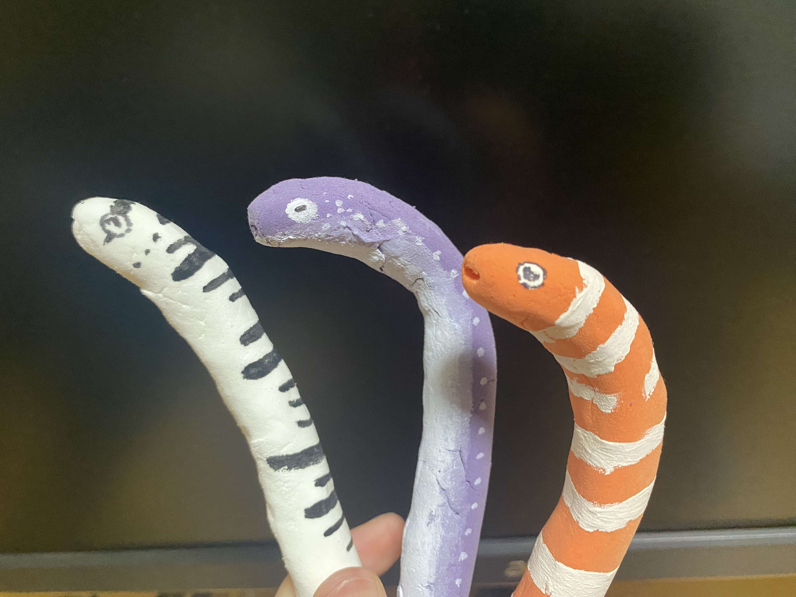
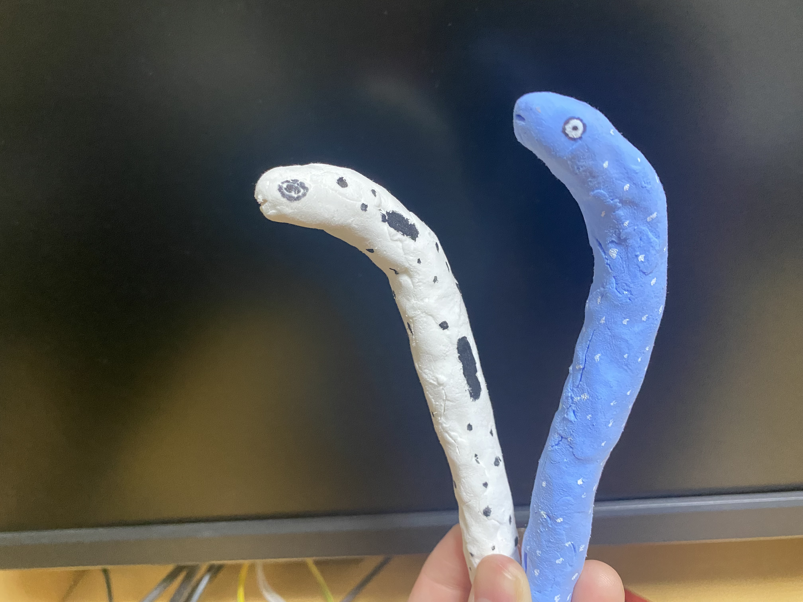

ファンの応援があってこそアイドルは輝ける．


Processing,Arduino,加速度センサ,サーボモーター,LED,AR
ファンの応援の声があってこそアイドルは輝けると思います。 この作品は、ペンライトを振ることで、チンアナゴアイドルがやる気をもらい踊りだします。 それ体験をしてもらってから、後ろにあるARカードを読み取ってもらいます。 すると、チンアナゴアイドルが、筋トレをしたり、ダンスレッスンをしたり努力をしていることがわかるMVが流れます。 MVを観ることにより、よりチンアナゴアイドルに愛着を持つことができ、応援をしたくなる気持ちが大きくなります。
この作品は3人チームで制作をし、約2週間で完成させました。1人1つずつ触ってみたい技術を持ち寄り、その技術を使って作品を作るという課題で作成しました。 私はチンアナゴの造形やサーボモータを動かすこと、他のPCとの通信、ステージの制作、ARで流す動画の構成などを担当しました。
ペンライトの中に加速度センサとLEDが入っていて、振るとひかり、processingにシリアル通信をして振られたことを知らせます。 そうしたら他のPCのprocessingとOSC通信を行い、arduinoとシリアル通信をします。 そうして振られたことがわかり、サーボモータが周り、チンアナゴアイドルが踊ります。